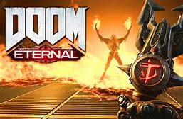

Doom Eternal is a first person shooter video game
developed by id Software and published by Bethesda Softworks. It is
the fifth main game in the Doom series and a direct sequel to
2016's Doom, and was released on March 20, 2020, for Windows,
PlayStation 4, Stadia and Xbox One, with a Nintendo Switch version
planned for a release at a later date. The game received positive
reviews, with praise for its campaign, graphics, level design,
soundtrack and combat mechanics, while some disliked the game's
increased focus on storytelling.
Doom Eternal (Recommended System Requirements)
- OS: Windows 10 64-bit
- CPU: Intel i7-6700K
- Video: GeForce GTX 1070
- Dedicated Video RAM: 4GB
- RAM: 16GB
- HDD: 55GB